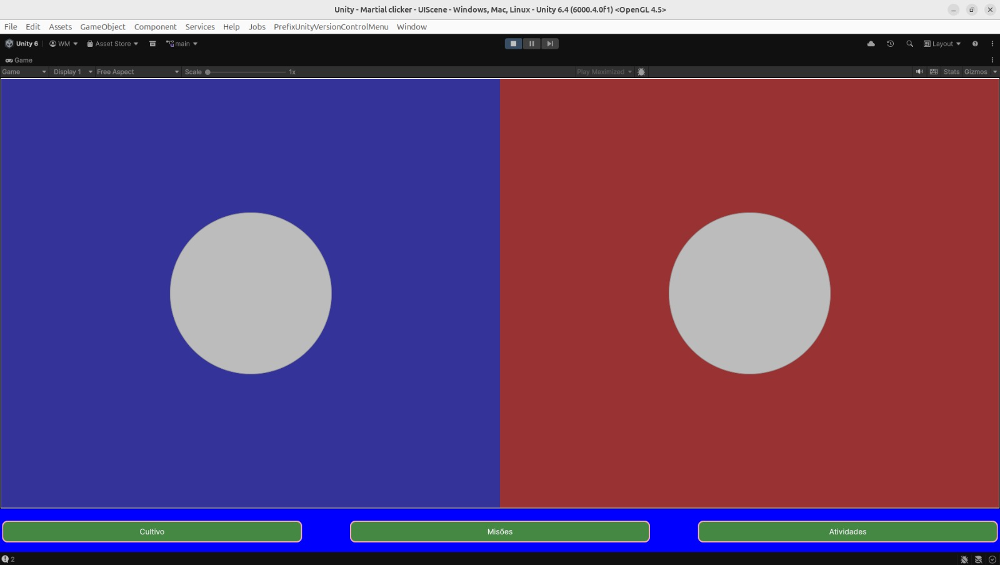

Problema Atual do Usuário:
Game devs indies geralmente fazem tudo sozinhos, perdem muito tempo tentando organizar processos, não sabem o que priorizar e ficam perdidos em quanto tempo dedicar a cada etapa do desenvolvimento.
Como o Lotl Resolve:
Une conteúdo educacional sobre processos de desenvolvimento de jogos com automações inteligentes que transformam documentação em tarefas práticas do Kanban.


Gerar documentação
Permite escrever a documentação livremente e os cards do Kanban automaticamente a partir do texto ou via IA
Conexão com Documentação
Conecta os cards diretamente à documentação do jogo para validar o status da implementação.
Monitoramento
Monitora a distribuição do tempo entre os diferentes pilares do desenvolvimento.
Lolt em uso
Utilização do lotl para criação de clicker simples

Integração nativa entre documentação do jogo e gestão de tarefas no Kanban, permitindo a criação de projetos inteiros a partir de documentos de texto.